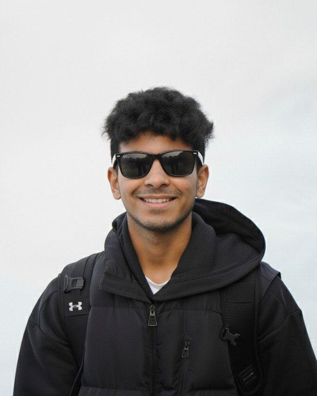

Dhanush Satish
Reddy
Student im Studiengang Engineering and Management an der Technischen Hochschule Ingolstadt.
Offen für Werkstudenten- und Praktikumsstellen

- Bangalorebis 2019
- Kempten2019–2025
- Ingolstadtseit 2025
Profil
…
Berufserfahrung
Bildungslaufbahn
Praktika
Zertifikate
Sprachen & Kenntnisse
Sprachen
Digitalkompetenz
Auszeichnungen
Außerhalb des Studiums
Engagement
…
Hobbys
…
Kontakt
Am schnellsten erreichen Sie mich per E-Mail oder über LinkedIn.